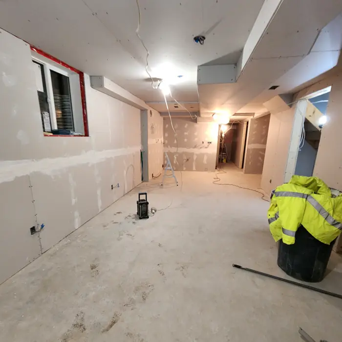

Home / Drywall installation
Drywall installation for basements, additions and renovations
We hang board on walls and ceilings, including vaulted ceilings, bulkheads and wet areas, then tape and finish it ready for paint. Drywall is the trade this business started in.

Included
What this covers
- Basements, additions, garages and renovation walls
- Ceilings, vaulted ceilings and bulkheads around ductwork
- Moisture-resistant board in bathrooms and laundry rooms
- Cement board in showers and tub surrounds, ready for tile
- Taping, finishing and sanding to Level 4 or Level 5
- Primer and paint on request, so the room is finished by one contractor

Process
How the job goes
You get a written scope before we start, and the same person on site every day.
- Measure and quoteWe measure the space or work from your drawings and quote board, labour and finishing as separate lines.
- Hang the boardCeilings first, then walls. Joints are staggered and kept away from door and window corners where cracks start.
- Tape and finishThree coats on every joint and screw, with corner bead on outside corners.
- Sand, check and hand overSanded and checked under a raking light. Ready for your painter, or we prime and paint it.
Questions
Drywall installation FAQ
How much does drywall installation cost?
Price depends on the square footage of board, ceiling height, how many corners and bulkheads there are, and the finish level. Send the room sizes or drawings and you get a written quote with board, labour and finishing listed separately.
Do you supply the drywall?
Yes. We can supply and deliver the board and materials, or install material you have already bought.
Which board goes in a bathroom?
Moisture-resistant drywall on bathroom walls and ceilings, and cement board behind tile in showers and tub surrounds. Regular drywall should not go behind shower tile.
Can you do just the boarding, or just the taping?
Yes. We take full install-and-finish jobs, boarding only, or taping and finishing after someone else has hung the board.